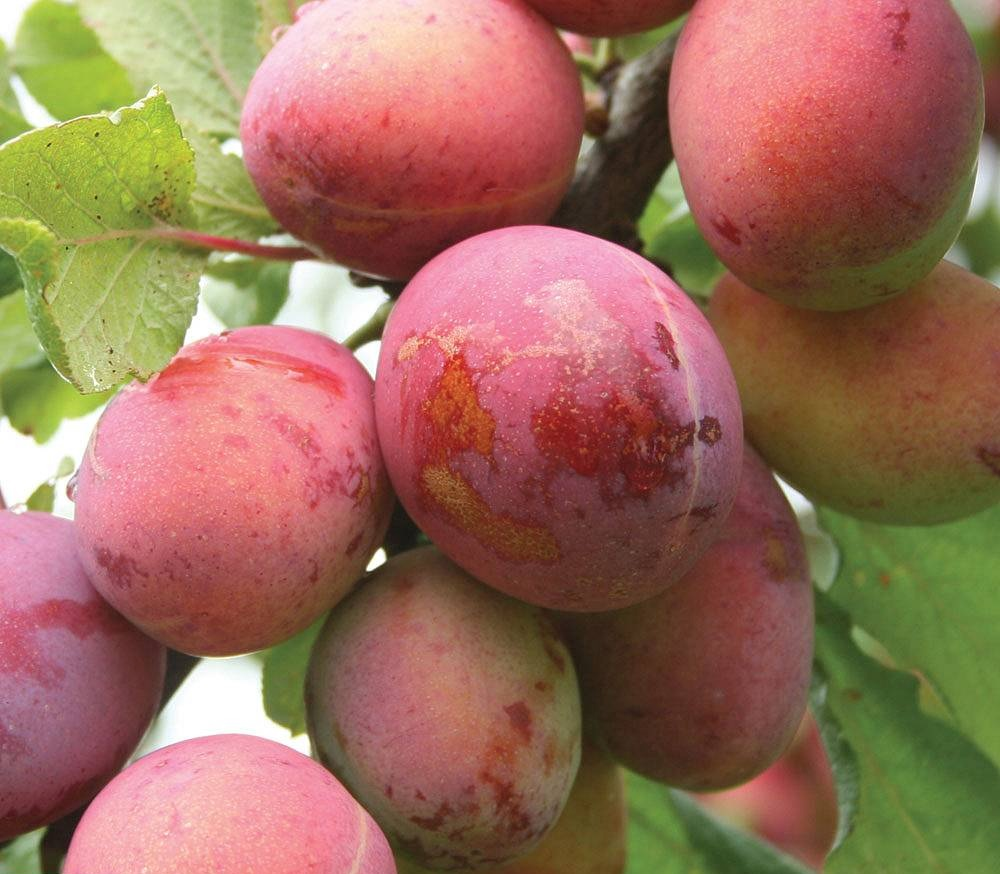
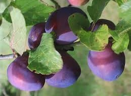
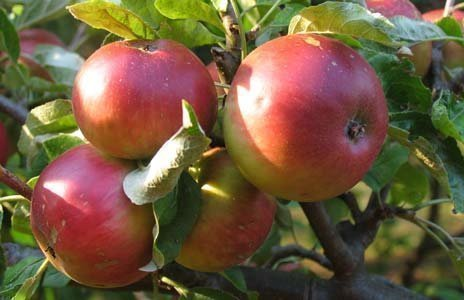
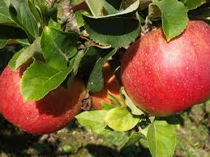
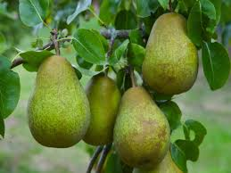

Woolstone Orchards is set on a Cotswold outlier overlooking the Severn Valley. The view from the orchard includes Cleeve Hill, May Hill, The Malvern Hills and, on a clear day, The Clee Hills.
Our fruit tastes better because it's only picked when it is ripe. Most of the fruit in Britain is picked and sold when it is still unripe because it has a longer shelf life. The label often says ripen at home but the reality is that it often does not ripen at all. It is the last few days spent ripening on the tree that gives the fruit it's wonderful flavour.
The orchards are on a slope, which is ideal for children to pick and play on, giving them plenty of exercise, and room to let off steam. A great family outing.
Our Products
Victoria Plums
Marjorie's Seedling Plums
Worcester Pearmain Apples
Lord Lambourne Apples
Conference Pears
Contact Us
Call us on: 01242 673278
Woolstone Orchards, Woolstone, Cheltenham, Gloucestershire, GL52 9RG.
Mon-Fri: 8am-6pm
Sat: 9am-1pm
Sun: Closed